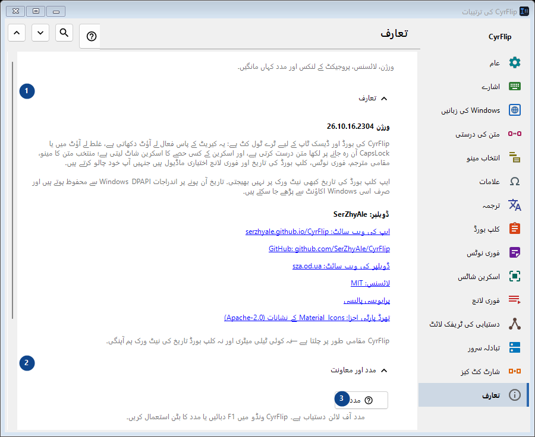
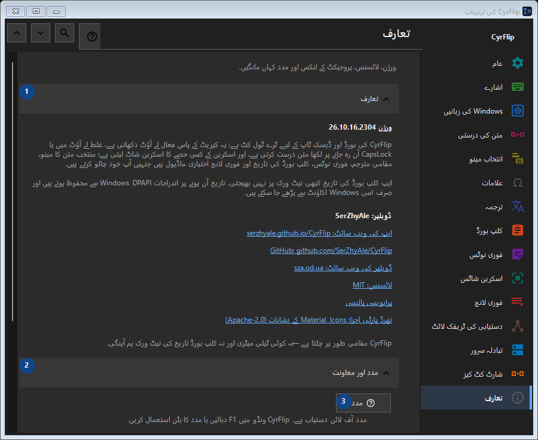

تعارف
مقصد
ورژن، لائسنس، پروجیکٹ کے لنکس اور مدد کہاں مانگیں۔


استعمال کی ترتیب
ترتیبات فوراً لاگو ہوتی ہیں۔ کوئی لازمی ترتیب نہیں؛ نیچے کے گروپ استعمال کریں۔
عناصر
1. تعارف
درج شدہ کارروائی کے لیے یہ حکم استعمال کریں۔ قبول کرنے سے پہلے تصدیق پڑھیں۔
آپ کے شارٹ کٹ2. مدد اور معاونت
درج شدہ کارروائی کے لیے یہ حکم استعمال کریں۔ قبول کرنے سے پہلے تصدیق پڑھیں۔
آپ کے شارٹ کٹ3. مدد
مدد آف لائن دستیاب ہے۔ CyrFlip ونڈو میں F1 دبائیں یا مدد کا بٹن استعمال کریں۔
آپ کے شارٹ کٹ4. تعارفی دورہ دکھائیں..
CyrFlip کو جانیں اور ترتیب دیں۔
آپ کے شارٹ کٹ5. کیریٹ کی جگہ کی تشخیص...
ایک مقامی رپورٹ بناتا ہے کہ Windows اور UI Automation کیریٹ کو کیسے دیکھتے ہیں۔ اس کی ضرورت صرف تب ہے جب کسی خاص ایپ میں نشان نہ دکھے یا غلط جگہ دکھے۔
آپ کے شارٹ کٹ6. لاگز مصنف کو بھیجیں..
CyrFlip کے لاگز کو ایک آرکائیو میں جمع کرتا ہے اور اسے منسلک کر کے مصنف کے لیے پیغام کھولتا ہے۔ پیغام آپ خود بھیجتے ہیں - CyrFlip نیٹ ورک پر کچھ نہیں بھیجتا۔ کلپ بورڈ کی تاریخ آرکائیو میں کبھی شامل نہیں ہوتی۔
آپ کے شارٹ کٹ